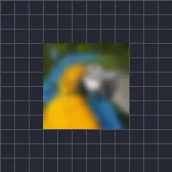

Blur Dalam

Membuat gambar di dalam lapisan menjadi blur dengan garis luarnya tetap tajam.
Pengaturan
| Pengaturan | Jenis | Rentang | Default |
|---|---|---|---|
| Kekuatan | Angka | 0 hingga 300 | 20 |

Membuat gambar di dalam lapisan menjadi blur dengan garis luarnya tetap tajam.
| Pengaturan | Jenis | Rentang | Default |
|---|---|---|---|
| Kekuatan | Angka | 0 hingga 300 | 20 |